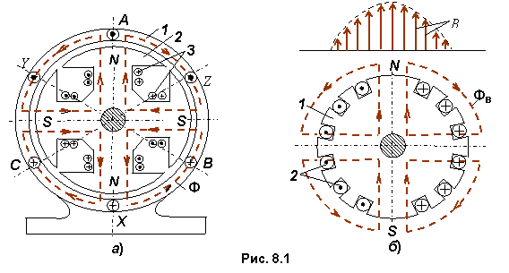
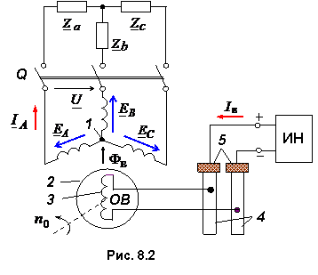

8.1.2. Устройство синхронных машин
> Синхронная машина, принципиальная схема устройства которой приведена на рис. 8.1а, состоит из статора (якоря) 1 и ротора (индуктора) 2.

Статор синхронной машины принципиально устроен так же, как и статор асинхронной машины. В пазах статора размещается многофазная (обычно трёхфазная) обмотка 1 (рис. 8.2). Фазы обмотки, как правило, соединяют в звезду. Магнитодвижущие силы фазных обмоток статора создают вращающееся магнитное поле Фв машины.
Явнополюсный ротор (рис. 8.1а и рис. 8.2) представляет собой электромагнит 2, обмотка 3 которого питается постоянным током через два контактных кольца 4 и щетки 5 от постороннего источника напряжения ИН, называемой обмоткой возбуждения ОВ (рис. 8.2).

Ток Iв создаёт магнитный поток возбуждения Фв. В качестве источника постоянного напряжения ИН (возбудителя) используют генератор постоянного тока, располагаемый на одном валу с ротором синхронной машины, или вентильный выпрямитель с щёточной или безщёточной системой возбуждения.
Неявнополюсный ротор (рис. 8.1б) состоит из сердечника 1, изготавливаемого из углеродистой или легированной стали, и обмотки возбуждения 2, распределённой по нескольким пазам ротора таким образом, чтобы получить синусоидальную по форме магнитную индукцию В в зазоре машины.